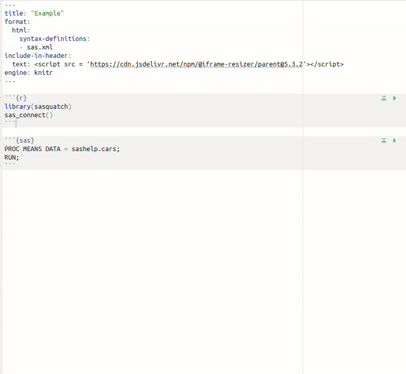
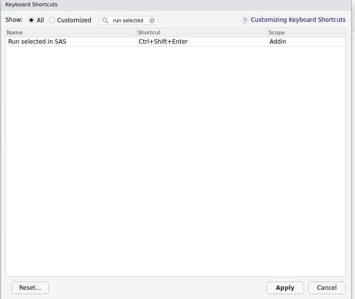

Every sasquatch script starts with
sas_connect(). By default, you will be connected to your
first SAS configuration (for more about configurations see
vignette("configuration")).
sas_connect()
#> ✔ SAS connection established.You can also specify your configuration by name:
sas_connect(cfgname = "my_config", reconnect = TRUE)
#> ✔ SAS connection terminated.
#> ✔ SAS connection established.If you ever need to end a connection, you can do so by using:
sas_disconnect()
#> ✔ SAS connection terminated.All connection information is stored within a
saspy.sasbase.SASsession object. For most individuals, you
will never need to interact with this object, but if you would like to
implement functionality not currently within sasquatch or
would like to access the current session from Python, you can via:
sas_get_session()
#> Access Method = IOM
#> SAS Config name = my_config
#> SAS Config file = /home/user/.virtualenvs/r-saspy/lib/python3.12/site-packages/saspy/sascfg_personal.py
#> WORK Path = /saswork/SAS_work0D3600010B4E_odaws01-usw2-2.oda.sas.com/SAS_work920700010B4E_odaws01-usw2-2.oda.sas.com/
#> SAS Version = 9.04.01M7P08062020
#> SASPy Version = 5.101.1
#> Teach me SAS = False
#> Batch = False
#> Results = Pandas
#> SAS Session Encoding = utf-8
#> Python Encoding value = utf-8
#> SAS process Pid value = 68430
#> SASsession started = Wed Dec 25 13:58:22 2024You can execute SAS code in a variety of different ways. All
sas_run_*() functions generate htmlwidgets, which display
both the output and log.
To execute a string of SAS code use
sas_run_string().
sas_run_string("PROC MEANS DATA = sashelp.cars;RUN;")To execute a SAS script use sas_run_file(). You can even
save the raw SAS HTML output and log by specifing an output path for the
HTML.
cat("PROC MEANS DATA = sashelp.cars;RUN;", file = "script.sas")
sas_widget <- sas_run_file("script.sas")
# will save output.html and output.log files
sas_run_file("script.sas", "output.html")Quarto documents are a great way to use SAS and R together because they couple R and SAS within a single reproducable document.
You can create a sasquatch quarto document by:
library(sasquatch); sas_connect()
Now, SAS code can be contained within “sas” code blocks.
---
format: html
engine: knitr
---
```{r}
library(sasquatch)
sas_connect()
```
```{sas}
PROC MEANS DATA = sashelp.cars;
RUN;
```In RStudio, you will be able to run SAS chunks as you would any other chunk.

If you want to be able to view SAS output within the Viewer instead
of beneath the chunk, you can utilize the
sas_run_selected() addin. To add a keyboard shortcut for
this addin, open Tools -> Modify Keyboard Shortcuts and search “Run
selected in SAS”, type in the box under Shortcut to set the keyboard
shortcut to your liking and click Apply.

In Positron, you will not be able to run SAS chunks as you would R or
Python chunks. However, just as in RStudio, you can create a keyboard
shortcut which will allow you to view SAS output within the Plots pane.
Open up the command palette with ctrl+shift+p or
command+shift+p and search “Preferences: Open Keyboard
Shortcuts (JSON)”. Add the following to your shortcuts.
{
"key": "ctrl+shift+enter",
"command": "workbench.action.executeCode.console",
"when": "editorTextFocus",
"args": {
"langId": "r",
"code": "sasquatch::sas_run_selected()",
"focus": true
}
}Edit the key argument to set your preferred
shortcut.
R data.frames can be automatically converted to and from
SAS tables. However, data.frames must only contain logical,
integer, double, factor, character, POSIXct, or Date class columns.
Convert R data.frames to SAS tables with
sas_from_r().
df <- data.frame(
double = c(1, 2.5, NA),
integer = c(1:2, NA),
logical = c(T, F, NA),
character = c("a", "b", NA),
factor = factor(c("a", "b", NA)),
date = as.Date("2015-12-09") + c(1:2, NA),
datetime = as.POSIXct("2015-12-09 10:51:34.5678", tz = "UTC") + c(1:2, NA)
)
tibble::tibble(df)
#> # A tibble: 3 × 7
#> double integer logical character factor date datetime
#> <dbl> <int> <lgl> <chr> <fct> <date> <dttm>
#> 1 1 1 TRUE a a 2015-12-10 2015-12-09 10:51:35
#> 2 2.5 2 FALSE b b 2015-12-11 2015-12-09 10:51:36
#> 3 NA NA NA NA NA NA NA
sas_from_r(df, "df", libref = "WORK")SAS only has two data types (numeric and character). R data types are converted as follows:
And convert SAS tables back to R data.frames with
sas_to_r().
df <- sas_to_r("df", libref = "WORK")
tibble::tibble(df)
#> # A tibble: 3 × 7
#> double integer logical character factor date datetime
#> <dbl> <dbl> <dbl> <chr> <chr> <dttm> <dttm>
#> 1 1 1 1 a a 2015-12-10 00:00:00 2015-12-09 10:51:35
#> 2 2.5 2 0 b b 2015-12-11 00:00:00 2015-12-09 10:51:36
#> 3 NA NA NA NA NA NA NASAS data types are converted as follows:
sasquatch offers a few different functions to manage
remote SAS files.
Upload files to a remote SAS server with
sas_file_upload().
cat("PROC MEANS DATA = sashelp.cars;RUN;", file = "script.sas")
sas_file_upload(local_path = "script.sas", sas_path = "~/script.sas")Download files from a remote SAS server with
sas_file_download().
sas_file_download(sas_path = "~/script.sas", local_path = "script.sas")Check if a file exists on the remote SAS server with
sas_file_exists().
sas_file_exists("~/script.sas")Copy files on the remote SAS server with
sas_file_copy().
sas_file_copy("~/script.sas", "~/script_copy.sas")Remove files from a remote SAS server with
sas_file_remove().
sas_file_remove("~/script_copy.sas")List all files and directories within a remote SAS server with
sas_list().
sas_list("~")
#> [1] "directory1" "file1.csv" "file2.sas"